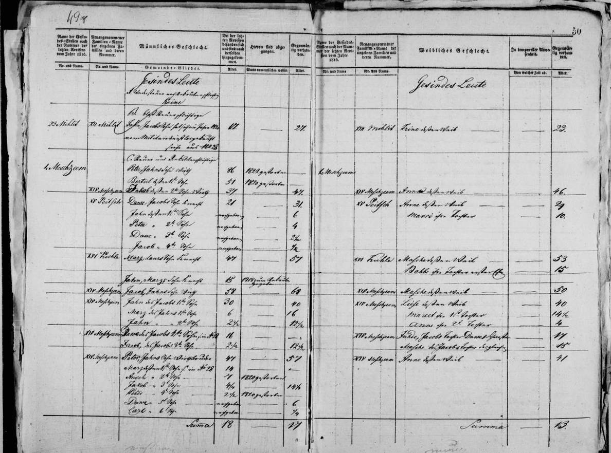
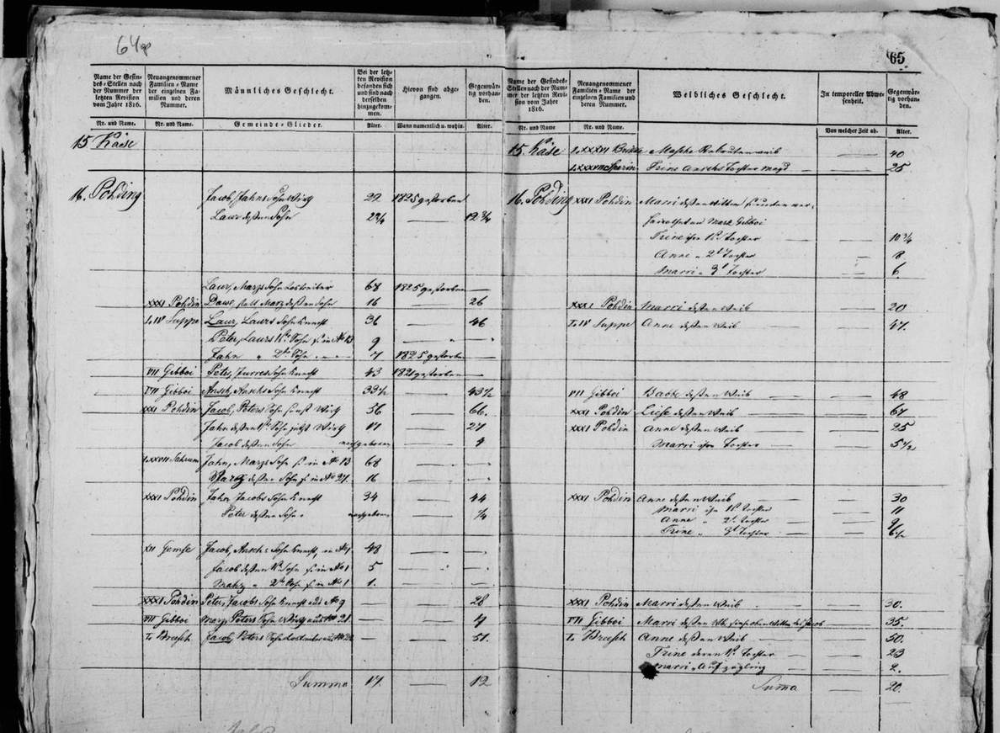
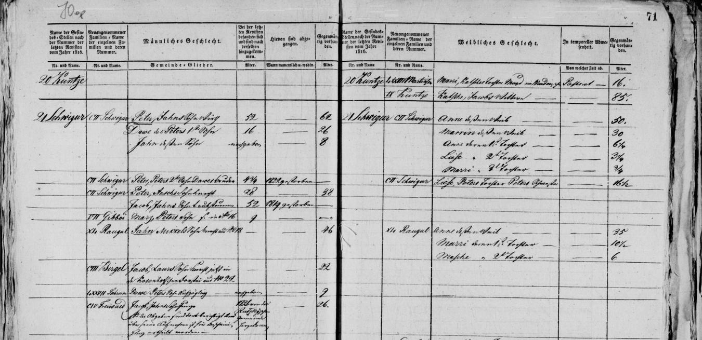

Jānis b. 1730
A relative by marriage.
Also recorded as Jahn (patronymic on Jacob Jahns Sohn Wirth, 1826).
Jānis was born about 17301.
Life events
| Event | Date | Place and details |
|---|---|---|
| Born | abt 1730 | 1 |
Records



Open questions
Sources
- Priekuļi (Freudenberg) surname revision 1826, No. 1 Meschzeem (surname XIV Meschzeem), LVVA f. 199, apr. 1, l. 112, image 54 (ff. 49v–50r), LVVA f. 199, apr. 1, l. 112, image 54.
XIV Meschzeem | Jacob Jahns Sohn Wirth | 58 | — | 68 / XIV Meschzeem | Jahn des Jacobs 1te Sohn | 30 | — | 40 / Marz des Jahns 1te Sohn | 6 | — | 16 / Jahn ,, 2te Sohn | 2½ | — | 12½ ‖ XIV Meschzeem | Masche deßen Weib | 50 / XIV Meschzeem | Liese deßen Weib | 40 / Mareet ihre 1te Tochter | 14½ / Anne ihre 2te Tochter | 4
Translation: Surname XIV Meschzeem: Jacob, Jahn's son, farmer, 58 -> 68; his wife Masche, 50. Jahn, Jacob's 1st son, 30 -> 40; his wife Liese, 40; Jahn's 1st son Marz, 6 -> 16; 2nd son Jahn, 2½ -> 12½; their 1st daughter Mareet, 14½; their 2nd daughter Anne, 4.
Named as the father of farmer Jēkabs Mežciems ('XIV Meschzeem | Jacob Jahns Sohn Wirth', age 68) and his brother Pēteris ('Peter, Jahns Sohn Wirthsbruder', age 57) in the 1826 Priekuļi surname revision at Farm 1. Meschzeem (LVVA f. 199, apr. 1, l. 112, image 54).